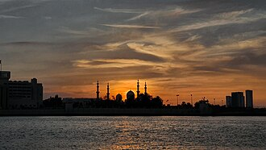

PrésentationتقديمOverview
La mosquée « Sheikh Zayed », avec sa superficie totale de 22 412 mètres carrés et sa capacité à accueillir jusqu'à quarante mille personnes, est la plus grande mosquée des Émirats arabes unis et la seizième au rang mondial. Son nom vient du sheikh Zayed ben Sultan Al Nahyane, le premier président des Émirats arabes unis et commanditaire de l'édifice.
جامع الشيخ زايد بن سلطان آل نهيان صرح إسلامي بارز في دولة الإمارات. يقع المسجد في العاصمة الإماراتية أبو ظبي ويعرف محليا بمسجد الشيخ زايد أو المسجد الكبير أو مسجد الشيخ زايد الكبير. ويعد سادس أكبر مسجد في العالم من حيث المساحة الكلية بعد المسجد الحرام في مكة المكرمة والمسجد النبوي في المدينة المنورة والمسجد الأعظم في الجزائر العاصمة والجامع الأموي في دمشق و مسجد السنة في الرباط بمساحة تبلغ 412,22 مترا مربعا بدون البحيرات العاكسة حوله، وأحد أكبر عشرة مساجد في العالم من حيث حجم المسجد. ويتسع المسجد لأكثر من 7000 مصلي في الداخل ولكن من الممكن مع استعمال المساحات الخارجية ان يتسع لحوالي 40,000 مصل لكافة أقسام مبنى المسجد. ومن معالمه المميزة وجود أربعة مآذن في أركان الصحن الخارجي بارتفاع 107 أمتار للمأذنة مكسية كاملة بالرخام الأبيض.
The Sheikh Zayed Grand Mosque is a mosque located in Abu Dhabi, the capital city of the United Arab Emirates. It is the country's largest mosque, and is the key place of worship for daily Islamic prayers. There is a smaller replica of this mosque in Surakarta, a city in Indonesia.
Şeyh Zayid Camii, Abu Dabi'de Birleşik Arap Emirlikleri'nin kurucusu, 2004'te hayatını kaybeden eski Devlet Başkanı Zeyd bin Sultan el-Nehyan'ın anısına, 2007 yılında ibadete açılan camidir.
Masjid Raya Sheikh Zayed adalah sebuah masjid yang terletak di kota Abu Dhabi, ibu kota Uni Emirat Arab. Masjid terbesar di negara ini, merupakan tempat ibadah utama untuk salat sehari-hari. Replika lebih kecil masjid ini terletak di kota Surakarta, Indonesia yaitu Masjid Sheikh Zayed Surakarta.
جامع مسجد شیخ زايد متحدہ عرب امارات کے دار الحکومت ابوظہبی میں واقع ہے۔ ملک کی سب سے بڑی مسجد، یہ روزانہ کی نماز کے لیے اہم عبادت گاہ ہے۔ عید کی نماز کے دوران یہاں 41 ہزار سے زائد لوگ اکھٹے ہوئے۔
Die Scheich-Zayid-Moschee ist eine Moschee in Abu Dhabi, der Hauptstadt der Vereinigten Arabischen Emirate. Sie ist die größte Moschee in den Vereinigten Arabischen Emiraten und eine der größten der Welt. Daher ist auch unter den Einheimischen die Bezeichnung „Große Moschee“ üblich. Das Sakralbauwerk befindet sich auf einem rund 56 Hektar großen Grundstück am Südostende der Hauptinsel und ist benannt nach Emir Zayid bin Sultan Al Nahyan, einem Mitgründer und erstem Präsidenten der Vereinigten Arabischen Emirate, dessen Grab sich auf dem Gelände befindet. Das Bauwerk wurde im Monat Ramadan (September/Oktober) 2007 offiziell eröffnet.
La mezquita Sheikh Zayed es una mezquita situada en Abu Dabi, en los Emiratos Árabes Unidos. Su nombre hace honor al primer presidente de los Emiratos Árabes Unidos, Zayed ibn Sultán Al Nahayan, que falleció en 2004. Su lugar de descanso final se encuentra en los terrenos junto a la misma mezquita. La mezquita fue construida entre 1996 y 2007 Es la mezquita más grande de los Emiratos Árabes Unidos y puede ser visitada por personas de otras confesiones religiosas. Posee cuatro minaretes de 104 metros de alto, y la bóveda más grande alcanza los 85 metros.
La Gran moschea dello Sceicco Zayed è una moschea situata ad Abu Dhabi, capitale degli Emirati Arabi Uniti, ed è considerata il luogo di culto più importante del paese.
A Grande Mesquita do Xeique Zayed em árabe: جَامِع ٱلشَّيْخ زَايِد ٱلْكَبِيْر; romaniz.: Jāmiʿ Ash-Shaykh Zāyid Al-Kabīr) situa-se em Abu Dabi, a capital dos Emirados Árabes Unidos. Com mais de 22 412 m² de área e capacidade para mais de 40 000 fieis, é a maior mesquita do país e principal local de culto para as orações de sexta feira e durante os feriados islâmicos. Foi construída entre 1995 e 2007 e o seu custo foi estimado entre 1,5 mil milhões * e 2 mil milhões de dirames emiradenses. Foi projetada pelo arquiteto sírio Yusef Abdelki e ocupa uma área de 420×290 m, excluindo os arranjos paisagísticos exteriores o parque de estacionamento.
De Sjeik Zayed-moskee in Abu Dhabi is de grootste moskee in de Verenigde Arabische Emiraten en de op zeven na grootste moskee ter wereld. De moskee is vernoemd naar sjeik Zayid bin Sultan al Nuhayyan, de grondlegger en eerste president van de Verenigde Arabische Emiraten, die er ook begraven ligt. De moskee werd officieel geopend tijdens de maand ramadan in 2007.
謝赫扎耶德大清真寺 是阿拉伯聯合大公國首都阿布達比的一座清真寺，以該國首任總統扎耶德·本·苏尔坦·阿勒纳哈扬命名（他死後也葬在寺旁）。
シェイク・ザーイド・モスクとはアブダビにあるモスク。世界最大のペルシア絨毯が置かれたことで有名になった。伝統的なイスラムのデザインと近代的な建築技術を用いてつくられた。2007年に竣工した世界で6番目に大きいモスクである。
셰이크 자이드 모스크(아랍어: جامع الشيخ زايد الكبير, 영어: Sheikh Zayed Mosque)는 아랍에미리트의 수도 아부다비에 있는 아랍에미리트 최대크기의 모스크이다. 1998년 착공하여 약 9년 간의 건설 끝에 2007년 완공되었다. 2004년 사망한 초대 아랍에미리트의 대통령 셰이크 자이드의 묘소가 이곳에 마련되어 있다.
शेख जायद ग्रैंड मस्जिद संयुक्त अरब अमीरात की राजधानी अबू धाबी में स्थित एक मस्जिद है। यह देश की सबसे बड़ी मस्जिद है और दैनिक प्रार्थनाओं के लिए इबादत का मुख्य स्थान है।
Мече́ть ше́йха Заида — одна из шести самых больших мечетей в мире. Расположена в Абу-Даби, столице Объединённых Арабских Эмиратов. Названа в честь шейха Заида ибн Султана Аль Нахайяна — основателя и первого президента Объединённых Арабских Эмиратов, похороненного рядом. Мечеть была официально открыта в месяц Рамадан в 2007 году.
Nhà thờ Hồi giáo Sheikh Zayed là một nhà thờ Hồi giáo ở Abu Dhabi, thủ đô Các Tiểu vương quốc Ả Rập Thống nhất. Nhà thờ này có 82 mái vòm, cao nhất tới 85m, 4 ngọn tháp cao 107m, với giá trị khoảng 2 tỉ dirham, được coi là chìa khóa cho sự thờ phụng chung trên cả đất nước này. Trong nhà thờ có tấm thảm len rộng gần 6.000m2 trong phòng cầu nguyện chính được coi là lớn nhất thế giới, thiết kế bởi nghệ sĩ Iran Ali Khaliqi, do 1.200-1.300 thợ dệt Iran thực hiện với 2.268.000.000 nút thắt, trong khoảng thời gian 2 năm mới có thể hoàn thành. Nhà thờ này có thể chứa tới 40.000 tín đồ, tinh tế bởi hàng cột 96 chiếc được chạm khảm, thiêng liêng bởi 99 tên gọi/danh xưng khác nhau của Thánh Allah được khắc - mạ vàng trên tường thánh đường.
Schejk Zayed-moskén är en moské belägen i Abu Dhabi, huvudstaden i Förenade arabemiraten som stod klar år 2007. Den är landets största moské, och har plats för mer än 40 000 personer, varav 7 000 i den största bönesalen. Moskén har fyra minareter med en höjd på 107 meter vardera och 82 kupolvalv i sju olika storlekar, varav det högsta når en höjd på 85 meter över marken samt 1 000 pelare.
Marea Moschee din Abu Dhabi sau Moscheea Șeicului Zayed este o moschee din Abu Dhabi, Emiratele Arabe Unite. Aceasta este cea mai mare moschee din Emirate și a opta cea mai mare moschee din lume.
Histoires et récitsقصص ورواياتStories and accounts
Fait historiqueواقعة تاريخيةHistorical factLe rêve et la tombe du fondateurحلم المؤسس وقبرهThe founder's dream and resting place
Cheikh Zayed ben Sultan Al Nahyane, fondateur des Émirats arabes unis, voulut une mosquée qui réunisse les styles de tout le monde musulman. Il suivit lui-même le chantier, commencé dans les années 1990. Il mourut en 2004 avant la fin des travaux et fut enterré dans la cour de la mosquée. Celle-ci fut inaugurée en décembre 2007. Elle compte 82 coupoles et plus de 1 000 colonnes, et elle est ouverte aux visiteurs de toutes religions.أراد الشيخ زايد بن سلطان آل نهيان، مؤسس دولة الإمارات العربية المتحدة، مسجدًا يجمع طرز العمارة في العالم الإسلامي كله، وأشرف بنفسه على البناء الذي بدأ في التسعينيات. وتوفّي سنة 2004 قبل اكتمال الأشغال، فدُفن في صحن المسجد. ودُشّن المسجد في ديسمبر 2007، وفيه 82 قبة وأكثر من ألف عمود، وهو مفتوح للزوار من كل الأديان.Sheikh Zayed bin Sultan Al Nahyan, founder of the United Arab Emirates, wanted a mosque that would bring together the styles of the whole Muslim world. He personally followed the work, begun in the 1990s. He died in 2004 before it was finished and was buried in the mosque's courtyard. The mosque was inaugurated in December 2007. It has 82 domes and more than 1,000 columns, and is open to visitors of all faiths.
Source :المصدر:Source: Wikipedia : Sheikh Zayed Grand Mosque
Fait historiqueواقعة تاريخيةHistorical factLe plus grand tapis noué à la mainأكبر سجادة معقودة يدويًاThe largest hand-knotted carpet
La grande salle de prière est couverte d'un seul tapis de plus de 5 600 m², considéré comme le plus grand tapis noué à la main du monde. Il a été dessiné par l'artiste iranien Ali Khaliqi et fabriqué en Iran par environ 1 200 à 1 300 tisserands. Il pèse environ 35 tonnes et compte plus de deux milliards de nœuds ; sa fabrication a pris près de deux ans. Il a été tissé en morceaux, puis assemblé sur place.تغطّي قاعة الصلاة الكبرى سجادة واحدة تزيد مساحتها على 5600 متر مربع، وتُعدّ أكبر سجادة معقودة يدويًا في العالم. صمّمها الفنان الإيراني علي خالقي، وصنعها في إيران نحو 1200 إلى 1300 حائك. ويبلغ وزنها نحو 35 طنًّا، وفيها أكثر من ملياري عقدة، واستغرق صنعها قرابة سنتين. وقد حيكت قطعًا ثم جُمعت في المسجد.The great prayer hall is covered by a single carpet of more than 5,600 m², considered the largest hand-knotted carpet in the world. It was designed by the Iranian artist Ali Khaliqi and made in Iran by about 1,200 to 1,300 weavers. It weighs about 35 tonnes and has more than two billion knots; making it took nearly two years. It was woven in pieces and then assembled on site.
Source :المصدر:Source: Wikipedia : Sheikh Zayed Grand Mosque
Toutes les histoires des mosquéesكل قصص المساجدAll the stories of the mosques →
Sur la carteعلى الخريطةOn the map
Documents et liensوثائق وروابطDocuments and links
- Wikipédia — Français
- Wikipédia — العربية
- Wikipédia — English
- Wikipédia — Türkçe
- Wikipédia — Bahasa Indonesia
- Wikipédia — اردو
- Wikipédia — Deutsch
- Wikipédia — Español
- Wikipédia — Italiano
- Wikipédia — Português
- Wikipédia — Nederlands
- Wikipédia — 中文
- Wikipédia — 日本語
- Wikipédia — 한국어
- Wikipédia — हिन्दी
- Wikipédia — Русский
- Wikipédia — Tiếng Việt
- Wikipédia — Svenska
- Wikipédia — Română
- Wikidata — Q695604
Données : Wikidata (CC0), mises à jour tous les 3 mois. L'année est la plus ancienne date de construction connue du bâtiment : pour un édifice devenu mosquée plus tard (comme Sainte-Sophie), c'est celle du bâtiment d'origine. Photos : Wikimedia Commons, auteur et licence sur la page de chaque photo.البيانات: ويكي بيانات (CC0)، تُحدَّث كل 3 أشهر. السنة هي أقدم تاريخ معروف لبناء المبنى: فإن صار مسجدًا لاحقًا (مثل آيا صوفيا) فهي سنة المبنى الأصلي. الصور: ويكيميديا كومنز، المؤلف والرخصة في صفحة كل صورة.Data: Wikidata (CC0), updated every 3 months. The year is the earliest known construction date of the building: for a building that became a mosque later (such as Hagia Sophia), it is that of the original building. Photos: Wikimedia Commons, author and licence on each photo's page.
Grandes mosquées du mondeالجوامع الكبرى في العالمGreat mosques of the world →